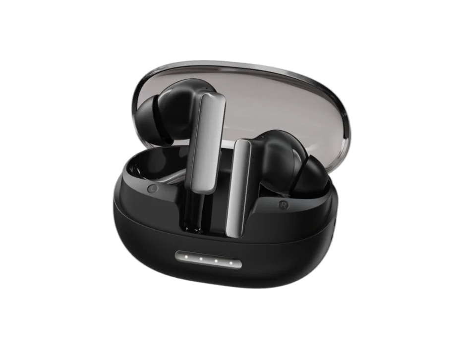

Which TWS040 version does this page cover?
This page is for TWS040 anc true wireless earbuds. Confirm the exact Bluetooth version, earbud or headset design and selected configuration on the sample.

ANC True Wireless Earbuds
Review TWS040 anc true wireless earbuds with its supplied product images and listed configuration. Check the exact version, charging setup and sample behavior before preparing your private-label package.

Product images
Use the supplied views to identify this model and prepare sample questions. Images are not test reports or an approved packing list.
View full-size TWS040 product image. Additional views can be requested with your sample question.
Listed model details
These are existing catalogue references, not new test results. Confirm the current sample and specification sheet for your project.
Playback and talk-time figures are listed references. Confirm earbud-only runtime versus charging-case-assisted totals and the ANC setting; no new runtime test is shown.
Before choosing a sample
Product FAQ
This page is for TWS040 anc true wireless earbuds. Confirm the exact Bluetooth version, earbud or headset design and selected configuration on the sample.
No. Supplied product images help identify the model, but accessories, colors, cables, receiver or charging case and packaging must be confirmed for the selected sample. Pictured parts are not automatically included.
Use the model-specific inquiry link and share your target devices, market and sample question. Logo, color, packaging and document needs can be discussed after the base version is clear.
Do not assume so. Confirm whether a listed playback or talk-time figure refers to a single charge or charging-case-assisted use, and whether ANC is on or off. The catalogue figure is not a new runtime test.
Send your target device, market and model question. A finished RFQ is not needed to start.